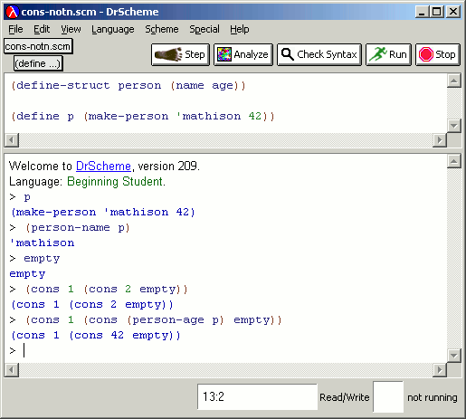
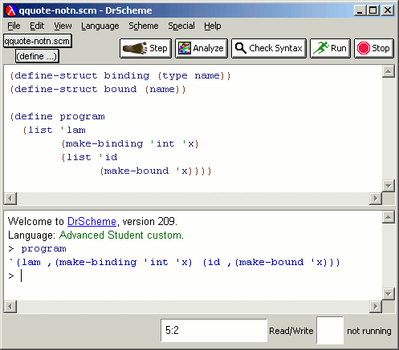

The Interactions window prints values using constructor notation for compound values, so students learn to understand these as values rather than as special syntax. In our experience, this helps students understand the intricacies of list processing better than when they use the quoted notation for list values.
|  |
There are times when the constructor notation can become rather unwieldy, e.g., when students are using lists to represent programs in a programming languages course. For this reason, DrScheme offers a quasiquote notation for printing values.
The printing style can be chosen independently of the language level in most cases (i.e., when the language level provides the necessary features).
|  |